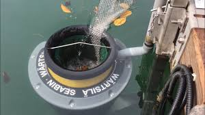
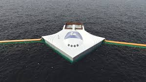
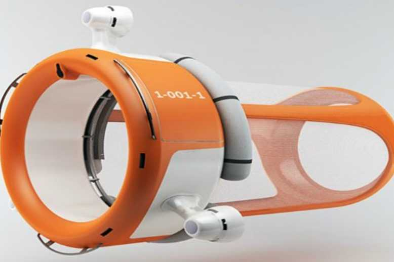

Solução
A Poluição Oceânica existe uma Solução?
|

|
SeabinTrata-se de uma espécie de lixeira que quando colocada no mar é capaz de retirar qualquer tipo de resíduo da superfície do mar. O invento é composto de cestos de lixo acoplados a bombas aquáticas que conseguem remover resíduos sólidos da água de maneira automática. As Seabins são como lixeiras tradicionais, no entanto, não utilizam um saco de lixo normal, mas sim uma espécie de filtro. A bomba acoplada faz com que a água passe continuamente pelo filtro e assim, faz com que os resíduos sólidos fiquem presos no filtro. Tudo o que tiver sujo no mar, é capturado pelo sistema e preso em uma tela de retenção que fica dentro da lata. |
OceanCleanupArrayCriado por um jovem holandês essa ideia consiste em usar as correntes marinhas para ajudar a captura de plástico nos oceanos. A ideia consiste basicamente em uma barreira flutuante que aproveita o movimento natural das correntes oceânicas para bloquear o lixo encontrado no caminho. A barreira formada por boias fica fixa no oceano e “segura” todo tipo de lixo e plástico que passar por ali, enquanto a maré e a vida aquática pode passar normalmente por baixo da superfície. O lixo reunido seria recolhido posteriormente. O objetivo do projeto é construir uma estrutura de 100 km capaz de recolher 70 mil toneladas de plástico em 10 anos. |

|
|

|
Marine DroneCriado por um grupo de designers franceses trata-se de um robô para limpar as águas do mar. O equipamento funcionaria como uma rede de pescador guiada via satélite. Ao se mover na água, ela coletaria apenas o lixo. O robô navegaria com orientações via satélite e sua energia seria captada de pequenas baterias. A água com sujeira entra pela abertura maior conforme o pequeno motor elétrico empurra o robô e escoa até a “boca” posterior do MarineDrone onde uma rede retém os detritos. Para evitar que peixes e demais animais marítimos acabem presos no bojo do dispositivo, os inventores do robô pensaram em umemissor de ondas sonoras em frequências que afastam os animais. |